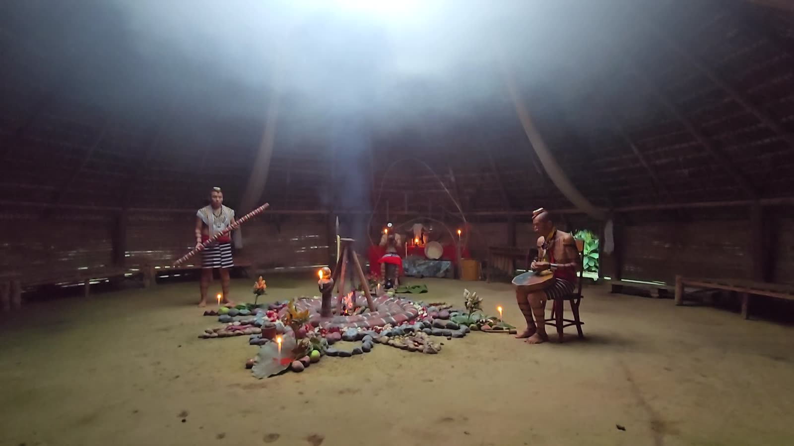
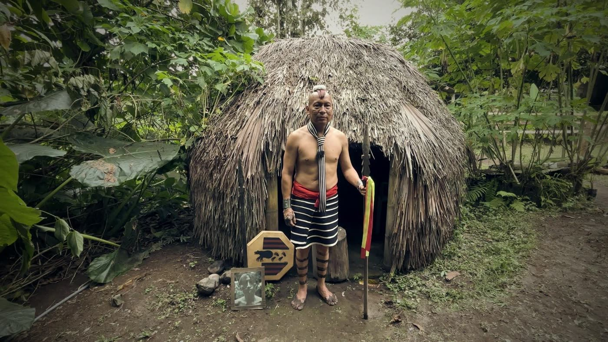
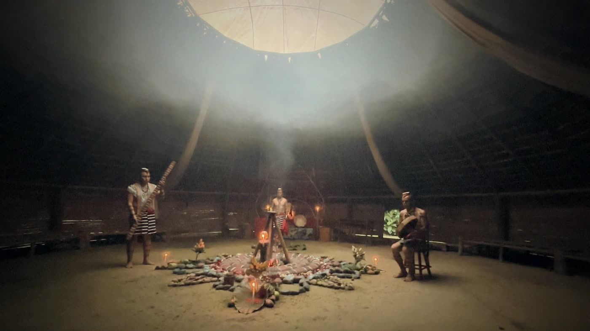
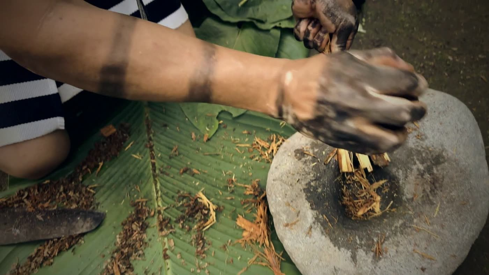
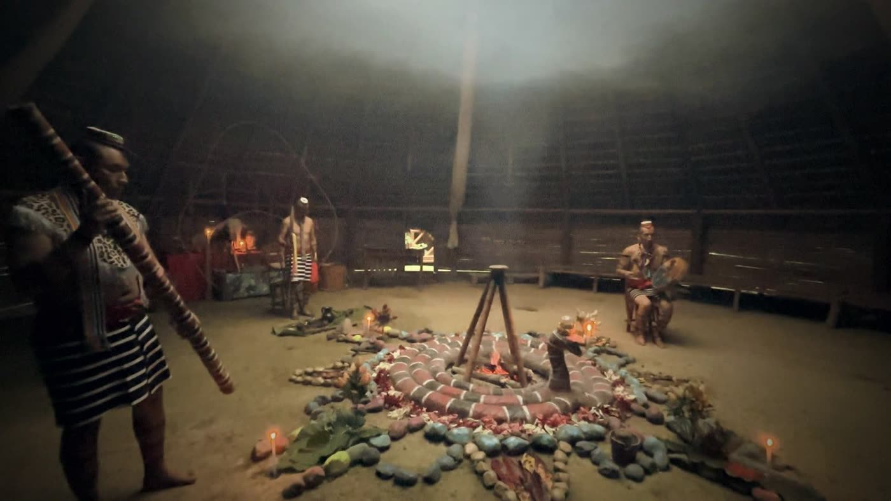
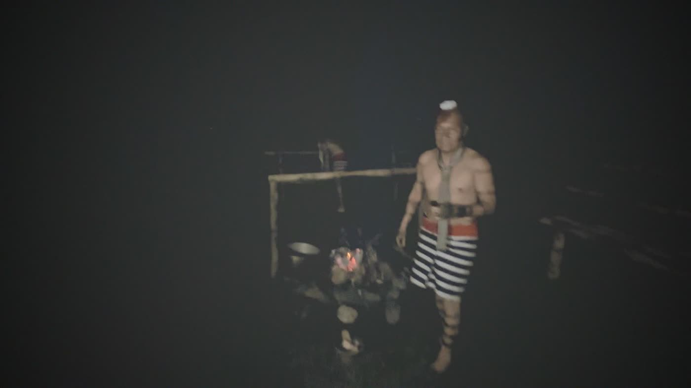
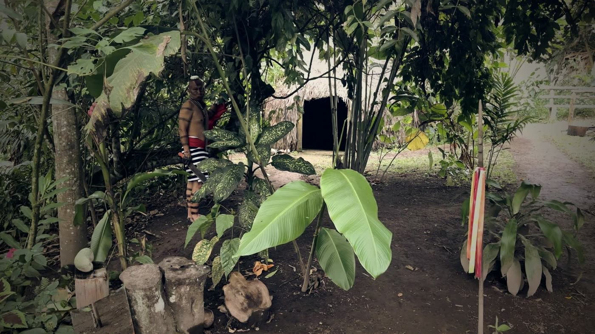

Retiro de sanación · Comunidad Tsáchila · Santo Domingo
Ceremonia guiada por tres chamanes de la comunidad Tsáchila, en plena selva. No es un retiro de hotel ni es para cualquiera: es el capítulo final de un documental, y tú sales en él.
El lugar
Fotos y video grabados por Carlos Becerra en la comunidad. Desliza para ver más.






← desliza →
Precio por fecha de inscripción
Lo que pagas cubre únicamente tres cosas: la ceremonia, la comida y la estadía. Es decir: la ceremonia con tres chamanes (con fogata y baño de cascada), el desayuno del sábado y el lugar para dormir en la comunidad. No pagas por salir en el documental ni por nada más. No incluye transporte hasta la comunidad. El precio sube en cada fecha y las inscripciones cierran el miércoles 4 de noviembre a las 23:59, o antes si se llenan los 10 cupos.
Programa
El documental
Estamos filmando un documental sobre los últimos chamanes Tsáchila. Esta ceremonia es su capítulo final: personas que toman ayahuasca por primera vez, antes y después.
Una sola noche. Máximo diez personas. Una medicina que se respeta.
Antes de seguir
Expectativas claras
La ceremonia es en territorio de la comunidad Tsáchila, en Santo Domingo. Todo es rústico. Mejor saberlo hoy que descubrirlo allá.
Recorrido real por la casa ceremonial: el altar y el fuego al centro, y alrededor las bancas y catres donde la gente descansa entre visiones y duerme hasta el amanecer.
El documental
Esta ceremonia es el capítulo final del documental sobre la comunidad Tsáchila. Participar significa aceptar que te filmemos. No hay versión sin cámaras.
Seguridad primero
La ayahuasca contiene DMT y alcaloides que actúan como inhibidores de la MAO. Combinada con ciertos medicamentos puede causar síndrome serotoninérgico o crisis de presión arterial, que son emergencias médicas. Por eso estas reglas no son negociables.
Preparación
0 de 0 listos
Preguntas frecuentes
Nadie que tome antidepresivos (ISRS, IRSN, tricíclicos, IMAO), litio, tramadol, triptanes o estimulantes; nadie con antecedente personal o familiar directo de psicosis, esquizofrenia o trastorno bipolar; nadie con enfermedad cardíaca, presión alta no controlada o epilepsia; embarazadas, mujeres en lactancia y menores de 18. La ayahuasca bloquea una enzima (la MAO) y mezclada con esos medicamentos puede causar emergencias médicas. Aplica para todos, sin excepción. Si tienes dudas, el test de abajo te lo dice.
La cantidad la deciden los chamanes para cada persona según su peso, su experiencia y cómo lo ve esa noche. Nadie toma por su cuenta ni pide más de lo que él sirve. Si es tu primera vez, díselo.
Sigue el checklist de esta página: sin alcohol ni drogas desde el miércoles, sin carne roja ni alimentos fermentados desde el jueves, sin relaciones sexuales desde el jueves y en ayunas desde el mediodía del viernes. Llega descansado, con la intención clara de por qué vienes. Si tomas cualquier medicamento, revísalo con tu médico antes; no lo suspendas por tu cuenta.
Comida simple: arroz, granos, verduras, frutas, pollo o pescado a la plancha, poca sal y poco aceite. Evita carne roja, embutidos, quesos maduros, salsa de soya, enlatados, alimentos fermentados, alcohol, café en exceso y chocolate. Estos alimentos contienen tiramina, que con la ayahuasca puede subir la presión. El viernes come ligero y temprano; no hay cena antes de la ceremonia. El desayuno del sábado está incluido.
Ropa blanca si tienes, si no la que tengas: cómoda, suelta y de algodón. Para la noche, una chompa o buzo abrigado. Para el baño de purificación, traje de baño o ropa que se pueda mojar, toalla y artículos de aseo.
Santo Domingo es cálido y húmedo: de día unos 24 a 28 °C y de noche baja a unos 18 a 20 °C. Puede llover en cualquier momento, así que trae un impermeable o poncho de lluvia y repelente para mosquitos.
Trae zapatos cerrados con buena suela para caminar de noche hacia la caverna y por el sendero a la cascada, que es resbaloso. Trae también sandalias que se quiten fácil. Dentro de la casa ceremonial sigue la indicación de los chamanes.
Cada tradición lo maneja distinto. Avísanos en el formulario y lo coordinamos con los chamanes antes de la ceremonia, para que sepas con tiempo cómo se hace en esta comunidad.
Sí. La purga (vómito, a veces diarrea) es parte del proceso y se espera. Tendrás un balde junto a ti. Los tres chamanes y el equipo acompañan a todos durante la noche. Si algo te asusta, quédate en tu lugar y pide ayuda; no salgas solo de la casa ceremonial.
Los efectos empiezan entre 30 y 60 minutos después de tomar y duran unas 4 a 6 horas. En el cuerpo puedes sentir náusea, vómito, diarrea, sudor, escalofríos, mareo y el corazón más acelerado. En la mente puedes ver imágenes con los ojos cerrados, revivir recuerdos y sentir emociones fuertes: miedo, tristeza, llanto, y también calma, alivio o alegría. Las molestias pasan; respirar lento y quedarte en tu lugar ayuda.
Normalmente no. Sigues consciente, sabes dónde estás y después recuerdas casi todo, aunque la percepción del tiempo y del cuerpo cambia mucho. El riesgo real es marearte o desmayarte al pararte de golpe después de vomitar. Por eso no te levantes rápido y pide que alguien te acompañe si necesitas ir al baño.
Toda la noche. Empieza a las 20:00, el efecto fuerte dura unas 4 a 6 horas y luego descansas en la misma casa ceremonial hasta el amanecer. El sábado a las 07:30 es el baño en la cascada.
Únicamente tres cosas: la ceremonia, la comida y la estadía. La ceremonia incluye a los tres chamanes Tsáchila, la preparación de la medicina, la fogata con ícaros y el baño de purificación en la cascada. La comida es el desayuno del sábado. La estadía es el lugar para dormir en la comunidad. Salir en el documental no tiene costo. No incluye transporte hasta la comunidad.
El lugar está en Santo Domingo de los Tsáchilas, a unas 3 horas en carro desde Quito. Cuando confirmamos tu cupo te enviamos la ubicación exacta por WhatsApp. Si no tienes cómo llegar, avísanos y coordinamos con el grupo.
No esa noche. El sábado maneja solo si ya te sientes completamente bien. Lo ideal es venir con alguien que maneje o compartir el carro con el grupo.
Durante la ceremonia, no: el celular va apagado y guardado. Las únicas cámaras son las del equipo del documental. Allá hay poca señal, así que avisa a tu familia antes de llegar.
Pasa. Cada cuerpo responde distinto y a veces la primera vez es suave. Nunca pidas ni tomes más por tu cuenta: eso lo deciden los chamanes.
Solo para ir al baño y acompañado por alguien del equipo. Afuera es selva, está oscuro y el suelo es irregular.
Una persona del equipo se mantiene sobria toda la noche y hay un vehículo disponible para ir al hospital en Santo Domingo si hace falta. Por eso el filtro de salud de esta página es estricto.
Sí. Cada persona llena su propio formulario, pasa el filtro de salud y paga su cupo.
Si no pasas el filtro de salud, te devolvemos el 100%. Si cancelas por otro motivo, puedes ceder tu cupo a otra persona que llene el formulario y pase el filtro.
Joyas, objetos de valor, alcohol, drogas ni perfumes fuertes. Trae lo justo: ropa cómoda, cobija, linterna, repelente, toalla y agua.
Sí, es condición para participar. Grabamos una entrevista antes (viernes por la tarde), la ceremonia con cámaras de poca luz y sin flash, y tu testimonio después (sábado en el desayuno). Firmas una autorización de uso de imagen y voz.
Paso 1 de 3
Paso 2 de 3
Pago seguro con PayPhone. Se abre en otra pestaña: cuando termines, anota el número de transacción y vuelve aquí para el paso 3.
Tu pago cubre únicamente la ceremonia, la comida y la estadía. No incluye transporte. Cada persona llega por su cuenta a Santo Domingo; te enviamos la ubicación por WhatsApp.
El precio que pagas es el de la fecha en que pagas, no el de la fecha en que llenas el formulario.
Anota el número de transacción que te muestra PayPhone. Lo escribes en el paso 3. El cupo se confirma cuando lo verificamos. Máximo 10 personas, por orden de pago.
Paso 3 de 3
Registro recibido. Te escribimos por WhatsApp para confirmar tu cupo. Si quieres acelerar, escríbenos al +593 98 187 2561.